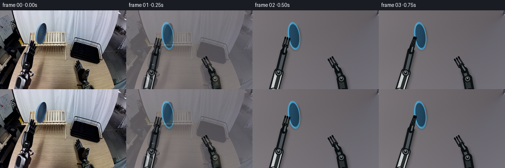
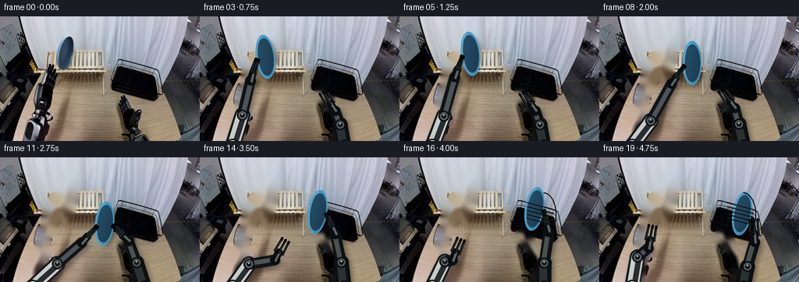
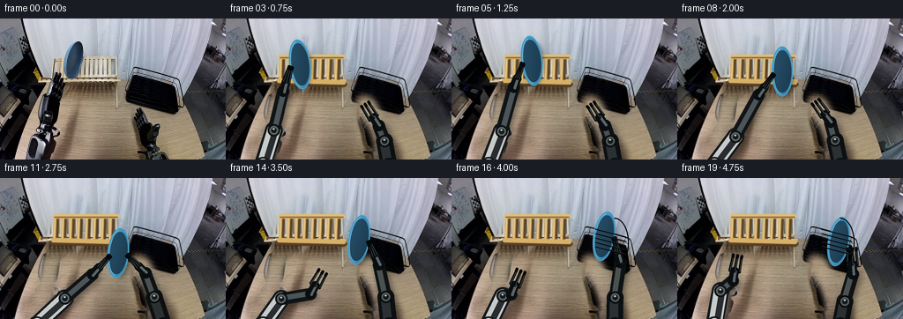
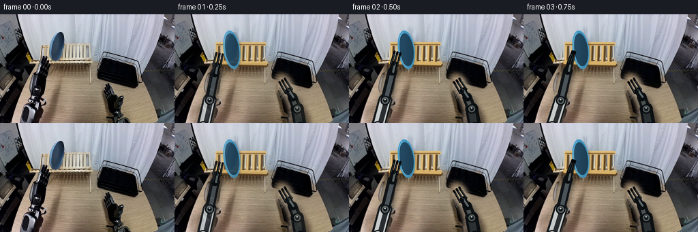
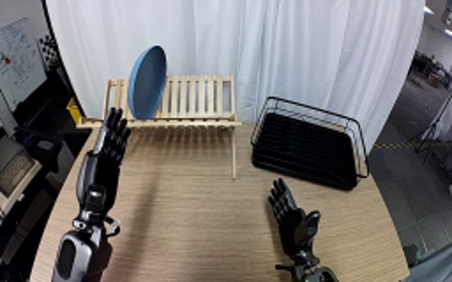
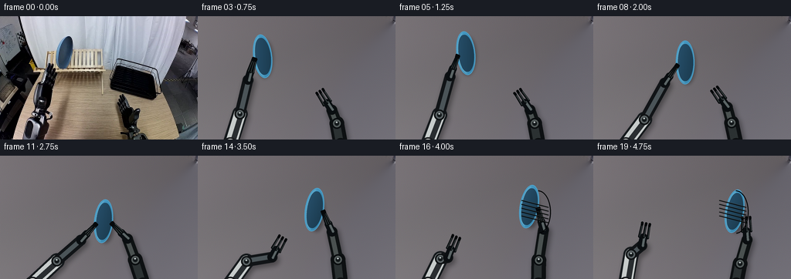
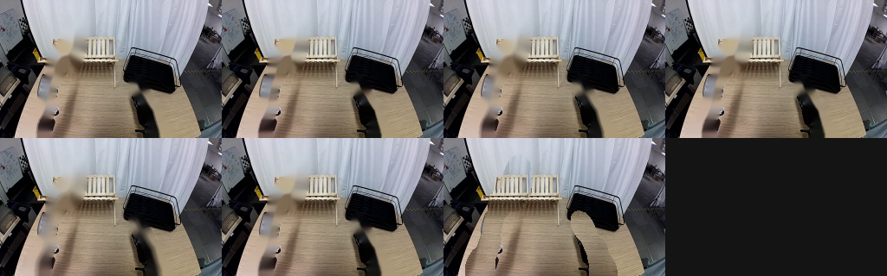
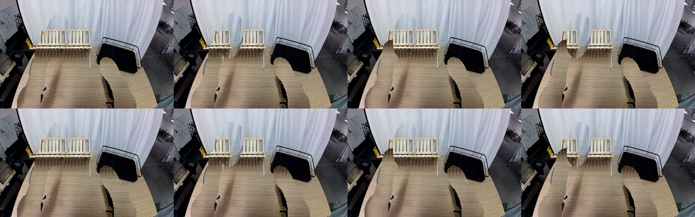
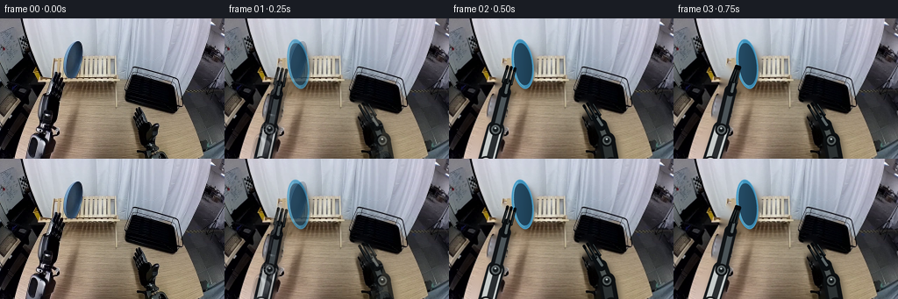

CODING AGENTS AS PIXEL WORLD MODELS
traex/GPT-5.6-Sol · common50_0035
点击播放 · 原生 RGB 像素
逐轮保存的候选
回放视频、检查图与代码变化。
每份候选均可单独播放。实际图片检查记录在下方工具轨迹中。
候选 01播放与检查图
点击播放 · 原生 RGB 像素


展开代码变化
--- 上一保存版本
+++ 本次保存版本
@@ -0,0 +1,231 @@
+from pathlib import Path
+import math
+import numpy as np
+import cv2
+from PIL import Image, ImageDraw, ImageFilter
+import artifact_io
+
+CASE_DIR = Path(__file__).resolve().parent
+W, H, N = 256, 160, 20
+S = 4
+
+
+def smoothstep(x):
+ x = max(0.0, min(1.0, float(x)))
+ return x*x*(3.0-2.0*x)
+
+
+def interp_keys(keys, frame, angular=False):
+ ks = sorted(keys)
+ if frame <= ks[0]: return keys[ks[0]]
+ if frame >= ks[-1]: return keys[ks[-1]]
+ for a,b in zip(ks[:-1],ks[1:]):
+ if a <= frame <= b:
+ t = smoothstep((frame-a)/(b-a))
+ va, vb = keys[a], keys[b]
+ if isinstance(va, (tuple,list,np.ndarray)):
+ return tuple(float(x)+(float(y)-float(x))*t for x,y in zip(va,vb))
+ return float(va)+(float(vb)-float(va))*t
+
+
+def clean_background(src):
+ """Remove the two original arms and blue plate while retaining the fixed set."""
+ mask = np.zeros((H,W), np.uint8)
+ # left robot, carefully bounded to the table side
+ cv2.ellipse(mask, (42,151), (16,24), 10, 0, 360, 255, -1)
+ cv2.line(mask, (42,154), (54,117), 21, 255)
+ cv2.line(mask, (53,127), (58,91), 15, 255)
+ cv2.line(mask, (58,101), (66,58), 14, 255)
+ cv2.ellipse(mask, (63,76), (10,25), 7, 0, 360, 255, -1)
+ # right robot
+ cv2.ellipse(mask, (184,156), (15,19), -12, 0, 360, 255, -1)
+ cv2.line(mask, (184,158), (176,127), 20, 255)
+ cv2.line(mask, (177,135), (162,101), 16, 255)
+ cv2.ellipse(mask, (161,103), (10,17), -28, 0, 360, 255, -1)
+ # source plate
+ cv2.ellipse(mask, (84,52), (15,31), 8, 0, 360, 255, -1)
+ mask = cv2.dilate(mask, np.ones((3,3),np.uint8), iterations=1)
+ return cv2.inpaint(src, mask, 5, cv2.INPAINT_TELEA)
+
+
+def P(p): return (int(round(p[0]*S)), int(round(p[1]*S)))
+
+def capsule(draw, a, b, width, fill):
+ draw.line([P(a),P(b)], fill=fill, width=max(1,int(width*S)), joint='curve')
+ r=width*S/2
+ for p in (a,b):
+ x,y=P(p); draw.ellipse((int(x-r),int(y-r),int(x+r),int(y+r)), fill=fill)
+
+
+def arm_shadow(layer, points, widths):
+ d=ImageDraw.Draw(layer)
+ shifted=[(x+2.2,y+3.4) for x,y in points]
+ for a,b,w in zip(shifted[:-1],shifted[1:],widths): capsule(d,a,b,w+2,(0,0,0,88))
+
+
+def joint(draw,p,r,outer=(15,18,20,255),inner=(91,99,101,255)):
+ x,y=P(p); rr=int(r*S)
+ draw.ellipse((x-rr,y-rr,x+rr,y+rr),fill=outer)
+ rr2=int((r-2)*S)
+ draw.ellipse((x-rr2,y-rr2,x+rr2,y+rr2),fill=inner)
+ rh=max(1,int((r-4)*S))
+ draw.ellipse((x-rh,y-rh,x+rh,y+rh),fill=(20,25,27,255))
+ draw.ellipse((x-rh//2,y-rh//2-1*S,x+rh//3,y-rh//6),fill=(185,194,194,190))
+
+
+def draw_robot(canvas, side, base, elbow, wrist, tip, openness, fingers_only=False):
+ """Draw rigid articulated links and a parallel multi-finger gripper."""
+ if not fingers_only:
+ sh=Image.new('RGBA',canvas.size,(0,0,0,0)); arm_shadow(sh,[base,elbow,wrist],[19,14]);
+ sh=sh.filter(ImageFilter.GaussianBlur(3*S)); canvas.alpha_composite(sh)
+ d=ImageDraw.Draw(canvas)
+ if not fingers_only:
+ if side=='left':
+ capsule(d,base,elbow,20,(21,25,28,255))
+ capsule(d,(base[0]+1,base[1]-1),elbow,15,(199,204,203,255))
+ capsule(d,(base[0]+3,base[1]-2),(elbow[0]+2,elbow[1]),7,(41,45,48,255))
+ capsule(d,elbow,wrist,14,(17,20,23,255))
+ capsule(d,(elbow[0]+1,elbow[1]-1),(wrist[0]+1,wrist[1]-1),6,(75,84,88,255))
+ joint(d,base,9,(22,24,27,255),(224,226,221,255))
+ joint(d,elbow,7)
+ joint(d,wrist,6,(12,15,17,255),(105,111,111,255))
+ else:
+ capsule(d,base,elbow,19,(13,16,18,255))
+ capsule(d,(base[0]-1,base[1]-1),(elbow[0]-1,elbow[1]-1),10,(43,49,50,255))
+ capsule(d,elbow,wrist,14,(14,18,19,255))
+ capsule(d,(elbow[0]-1,elbow[1]-1),(wrist[0]-1,wrist[1]-1),6,(74,81,80,255))
+ joint(d,base,8,(11,14,16,255),(70,77,76,255))
+ joint(d,elbow,7,(10,13,15,255),(83,91,90,255))
+ joint(d,wrist,6,(9,12,14,255),(93,100,98,255))
+ # gripper palm and fingers, always on top of the plate
+ vx,vy=tip[0]-wrist[0],tip[1]-wrist[1]
+ ll=max(1e-6,math.hypot(vx,vy)); ux,uy=vx/ll,vy/ll; nx,ny=-uy,ux
+ palm=(wrist[0]+ux*11,wrist[1]+uy*11)
+ capsule(d,wrist,palm,10,(10,14,17,255))
+ capsule(d,(wrist[0]+nx*1.4,wrist[1]+ny*1.4),(palm[0]+nx*1.0,palm[1]+ny*1.0),3,(91,101,102,255))
+ spread=2.0+4.0*openness
+ # Three rigid phalanges give the recognizable industrial/anthropomorphic gripper silhouette.
+ for j,off in enumerate((-spread,0,spread)):
+ root=(palm[0]+nx*off,palm[1]+ny*off)
+ end=(tip[0]+nx*off*(0.58 if openness<.45 else .88),tip[1]+ny*off*(0.58 if openness<.45 else .88))
+ capsule(d,root,end,3.0,(8,12,14,255))
+ # a narrow steel highlight and a bent terminal pad
+ d.line([P((root[0]+nx*.45,root[1]+ny*.45)),P((end[0]+nx*.45,end[1]+ny*.45))],fill=(91,102,101,210),width=max(1,S//2))
+ pad=(end[0]+ux*2.0,end[1]+uy*2.0)
+ capsule(d,end,pad,3.3,(5,8,10,255))
+
+
+def plate_patch(angle, scale=1.0):
+ # Upright ceramic plate represented by a consistent rigid elliptical disk.
+ pw,ph=int(42*S*scale),int(70*S*scale)
+ arr=np.zeros((ph,pw,4),np.uint8)
+ yy,xx=np.mgrid[0:ph,0:pw]
+ cx,cy=pw*.50,ph*.50; rx,ry=pw*.29,ph*.405
+ q=((xx-cx)/rx)**2+((yy-cy)/ry)**2
+ inside=q<=1
+ rim=(q<=1)&(q>.73)
+ # radial ceramic shading, bright on left like the source image
+ light=np.clip(.78 + .28*(cx-xx)/max(1,rx) - .12*(yy-cy)/max(1,ry),0,1)
+ arr[...,3]=np.where(inside,255,0).astype(np.uint8)
+ arr[...,0]=np.where(inside,19+18*light,0).astype(np.uint8)
+ arr[...,1]=np.where(inside,45+31*light,0).astype(np.uint8)
+ arr[...,2]=np.where(inside,60+42*light,0).astype(np.uint8)
+ arr[rim,0]=(40+30*light[rim]).astype(np.uint8)
+ arr[rim,1]=(109+47*light[rim]).astype(np.uint8)
+ arr[rim,2]=(145+54*light[rim]).astype(np.uint8)
+ # slim crisp rim and glint
+ im=Image.fromarray(arr,'RGBA'); dr=ImageDraw.Draw(im)
+ dr.ellipse((int(cx-rx),int(cy-ry),int(cx+rx),int(cy+ry)),outline=(78,158,198,255),width=max(1,int(1.1*S)))
+ dr.arc((int(cx-rx+2*S),int(cy-ry+2*S),int(cx+rx-2*S),int(cy+ry-2*S)),95,260,fill=(112,188,216,220),width=max(1,int(.8*S)))
+ return im.rotate(angle,resample=Image.Resampling.BICUBIC,expand=True)
+
+
+def draw_plate(canvas, center, angle, rack_stage=False):
+ # contact shadow, coherent with overhead lighting
+ sh=Image.new('RGBA',canvas.size,(0,0,0,0)); sd=ImageDraw.Draw(sh)
+ x,y=P((center[0]+2.5,center[1]+3.5)); sd.ellipse((x-11*S,y-25*S,x+11*S,y+25*S),fill=(0,0,0,85))
+ sh=sh.filter(ImageFilter.GaussianBlur(2.2*S)); canvas.alpha_composite(sh)
+ patch=plate_patch(angle)
+ x=int(center[0]*S-patch.width/2); y=int(center[1]*S-patch.height/2)
+ canvas.alpha_composite(patch,(x,y))
+
+
+def rack_occlusion(canvas, center, amount):
+ """Redraw the rack's foreground slot wires as the plate enters it."""
+ if amount<=0: return
+ d=ImageDraw.Draw(canvas)
+ a=int(235*amount)
+ # diagonal lower rails and two curved side retainers in front of the plate
+ for k in range(-2,3):
+ y=68+k*5
+ d.line([P((163,y)),P((198,y+9))],fill=(4,7,8,a),width=max(2,int(1.4*S)))
+ d.line([P((164,y-1)),P((197,y+8))],fill=(69,73,70,int(80*amount)),width=max(1,S//2))
+ d.arc((168*S,45*S,201*S,101*S),270,87,fill=(3,5,6,a),width=max(2,int(1.4*S)))
+
+
+def pose(frame):
+ plate_center=interp_keys({0:(84,52),4:(84,52),5:(91,48),6:(101,47),7:(110,51),8:(119,60),9:(127,72),10:(134,85),12:(134,85),13:(141,78),14:(151,70),15:(162,66),16:(173,66),17:(180,69),18:(183,72),19:(183,72)},frame)
+ plate_angle=interp_keys({0:8,6:6,10:-6,12:-6,15:-10,19:-10},frame)
+ # gripper tips
+ if frame<=3:
+ ltip=interp_keys({0:(63,61),3:(73,57)},frame)
+ elif frame<=12:
+ ltip=(plate_center[0]-11,plate_center[1]+5)
+ else:
+ ltip=interp_keys({13:(123,91),14:(109,108),16:(78,107),19:(68,90)},frame)
+ if frame<=7:
+ rtip=(159,99)
+ elif frame<=10:
+ rtip=interp_keys({7:(159,99),8:(158,96),9:(154,91),10:(149,88)},frame)
+ elif frame<=12:
+ rtip=(plate_center[0]+12,plate_center[1]+4)
+ elif frame<=18:
+ rtip=(plate_center[0]+12,plate_center[1]+4)
+ else:
+ rtip=(198,82)
+ # Gripper approach vectors are stable within each manipulation phase.
+ la=interp_keys({0:-78,4:-72,8:-54,12:-45,14:-61,19:-79},frame)
+ ra=interp_keys({0:-121,8:-125,10:-133,12:-137,15:-105,18:-101,19:-92},frame)
+ ldir=(math.cos(math.radians(la)),math.sin(math.radians(la)))
+ rdir=(math.cos(math.radians(ra)),math.sin(math.radians(ra)))
+ lwrist=(ltip[0]-ldir[0]*27,ltip[1]-ldir[1]*27)
+ rwrist=(rtip[0]-rdir[0]*27,rtip[1]-rdir[1]*27)
+ lelbow=interp_keys({0:(51,126),4:(55,127),8:(66,134),12:(75,137),14:(63,137),19:(49,128)},frame)
+ relbow=interp_keys({0:(180,139),7:(180,139),10:(176,136),12:(174,134),15:(184,135),18:(190,137),19:(190,140)},frame)
+ lopen=interp_keys({0:.9,2:.75,3:.35,4:.12,11:.10,12:.55,14:.9,19:.9},frame)
+ ropen=interp_keys({0:.85,9:.8,10:.55,11:.18,17:.16,18:.58,19:.95},frame)
+ return plate_center,plate_angle,ltip,rtip,lwrist,rwrist,lelbow,relbow,lopen,ropen
+
+
+def render_frame(bg, frame):
+ # Render at 4x for smooth edges while retaining the source photograph as fixed workspace.
+ base=Image.fromarray(bg).resize((W*S,H*S),Image.Resampling.LANCZOS).convert('RGBA')
+ pc,pa,lt,rt,lw,rw,le,re,lo,ro=pose(frame)
+ # First the rigid plate, then articulated manipulators so finger pads visibly contact its rim.
+ draw_plate(base,pc,pa,frame>=16)
+ draw_robot(base,'left',(42,166),le,lw,lt,lo)
+ draw_robot(base,'right',(185,166),re,rw,rt,ro)
+ if frame>=16: rack_occlusion(base,pc,smoothstep((frame-15)/3))
+ out=np.asarray(base.convert('RGB').resize((W,H),Image.Resampling.LANCZOS),dtype=np.uint8)
+ return out
+
+
+def main():
+ src=np.asarray(Image.open(CASE_DIR/'first_frame.png').convert('RGB'),dtype=np.uint8)
+ bg=clean_background(src)
+ frames=[]
+ for i in range(N):
+ if i==0:
+ frames.append(src.copy())
+ else:
+ gen=render_frame(bg,i)
+ # One short registration blend avoids a first-frame pop without creating sustained ghosts.
+ if i==1:
+ gen=np.clip(src.astype(np.float32)*0.22+gen.astype(np.float32)*0.78,0,255).astype(np.uint8)
+ frames.append(gen)
+ frames=np.stack(frames).astype(np.uint8)
+ assert frames.shape==(20,160,256,3) and np.array_equal(frames[0],src)
+ artifact_io.save(frames,CASE_DIR)
+
+if __name__=='__main__':
+ main()
候选 02播放与检查图
点击播放 · 原生 RGB 像素

展开代码变化
--- 上一保存版本
+++ 本次保存版本
@@ -33,14 +33,14 @@
mask = np.zeros((H,W), np.uint8)
# left robot, carefully bounded to the table side
cv2.ellipse(mask, (42,151), (16,24), 10, 0, 360, 255, -1)
- cv2.line(mask, (42,154), (54,117), 21, 255)
- cv2.line(mask, (53,127), (58,91), 15, 255)
- cv2.line(mask, (58,101), (66,58), 14, 255)
+ cv2.line(mask, (42,154), (54,117), 255, 21)
+ cv2.line(mask, (53,127), (58,91), 255, 15)
+ cv2.line(mask, (58,101), (66,58), 255, 14)
cv2.ellipse(mask, (63,76), (10,25), 7, 0, 360, 255, -1)
# right robot
cv2.ellipse(mask, (184,156), (15,19), -12, 0, 360, 255, -1)
- cv2.line(mask, (184,158), (176,127), 20, 255)
- cv2.line(mask, (177,135), (162,101), 16, 255)
+ cv2.line(mask, (184,158), (176,127), 255, 20)
+ cv2.line(mask, (177,135), (162,101), 255, 16)
cv2.ellipse(mask, (161,103), (10,17), -28, 0, 360, 255, -1)
# source plate
cv2.ellipse(mask, (84,52), (15,31), 8, 0, 360, 255, -1)
候选 03播放与检查图
点击播放 · 原生 RGB 像素


展开代码变化
--- 上一保存版本
+++ 本次保存版本
@@ -30,22 +30,55 @@
def clean_background(src):
"""Remove the two original arms and blue plate while retaining the fixed set."""
- mask = np.zeros((H,W), np.uint8)
+ left = np.zeros((H,W), np.uint8)
# left robot, carefully bounded to the table side
- cv2.ellipse(mask, (42,151), (16,24), 10, 0, 360, 255, -1)
- cv2.line(mask, (42,154), (54,117), 255, 21)
- cv2.line(mask, (53,127), (58,91), 255, 15)
- cv2.line(mask, (58,101), (66,58), 255, 14)
- cv2.ellipse(mask, (63,76), (10,25), 7, 0, 360, 255, -1)
+ cv2.ellipse(left, (42,151), (16,24), 10, 0, 360, 255, -1)
+ cv2.line(left, (42,154), (54,117), 255, 21)
+ cv2.line(left, (53,127), (58,91), 255, 15)
+ cv2.line(left, (58,101), (66,58), 255, 14)
+ cv2.ellipse(left, (63,76), (10,25), 7, 0, 360, 255, -1)
# right robot
- cv2.ellipse(mask, (184,156), (15,19), -12, 0, 360, 255, -1)
- cv2.line(mask, (184,158), (176,127), 255, 20)
- cv2.line(mask, (177,135), (162,101), 255, 16)
- cv2.ellipse(mask, (161,103), (10,17), -28, 0, 360, 255, -1)
- # source plate
- cv2.ellipse(mask, (84,52), (15,31), 8, 0, 360, 255, -1)
- mask = cv2.dilate(mask, np.ones((3,3),np.uint8), iterations=1)
- return cv2.inpaint(src, mask, 5, cv2.INPAINT_TELEA)
+ right = np.zeros((H,W), np.uint8)
+ cv2.ellipse(right, (184,156), (15,19), -12, 0, 360, 255, -1)
+ cv2.line(right, (184,158), (176,127), 255, 20)
+ cv2.line(right, (177,135), (162,101), 255, 16)
+ cv2.ellipse(right, (161,103), (10,17), -28, 0, 360, 255, -1)
+
+ # Feather shifted samples of the same wooden tabletop into the arm silhouettes.
+ # Sampling from the same row keeps the wood grain and projective lighting stable.
+ out = src.astype(np.float32).copy()
+ def shifted_fill(mask, dx):
+ core = cv2.dilate(mask, np.ones((3,3),np.uint8), iterations=1)
+ soft = cv2.GaussianBlur(core, (0,0), 3.2).astype(np.float32) / 255.0
+ sample = np.empty_like(src)
+ for x in range(W): sample[:,x] = src[:,max(0,min(W-1,x+dx))]
+ a = soft[...,None]
+ out[:] = out*(1-a) + sample.astype(np.float32)*a
+ shifted_fill(left, 54)
+ shifted_fill(right, -62)
+
+ # The plate originally occludes the curtain and several slats. Restore curtain
+ # texture first, then reconstruct the regular wooden stand geometry explicitly.
+ plate = np.zeros((H,W),np.uint8)
+ cv2.ellipse(plate,(84,52),(16,32),8,0,360,255,-1)
+ plate = cv2.dilate(plate,np.ones((3,3),np.uint8),iterations=1)
+ soft = cv2.GaussianBlur(plate,(0,0),2.0).astype(np.float32)/255.0
+ sample=np.empty_like(src)
+ for x in range(W): sample[:,x]=src[:,min(W-1,x+45)]
+ a=soft[...,None]
+ out=out*(1-a)+sample.astype(np.float32)*a
+ out=np.clip(out,0,255).astype(np.uint8)
+
+ # Repeating rack back-rest slats, rails, and their soft shadows.
+ for x in range(62,132,9):
+ cv2.line(out,(x+2,45),(x+1,73),(91,67,36),3,cv2.LINE_AA)
+ cv2.line(out,(x,44),(x-1,72),(207,168,100),2,cv2.LINE_AA)
+ cv2.line(out,(x,45),(x-1,70),(236,202,130),1,cv2.LINE_AA)
+ cv2.line(out,(59,72),(134,74),(87,62,35),5,cv2.LINE_AA)
+ cv2.line(out,(59,70),(134,72),(215,177,105),3,cv2.LINE_AA)
+ cv2.line(out,(61,43),(133,43),(223,188,119),3,cv2.LINE_AA)
+ cv2.line(out,(61,44),(133,44),(119,87,49),1,cv2.LINE_AA)
+ return out
def P(p): return (int(round(p[0]*S)), int(round(p[1]*S)))
@@ -134,7 +167,7 @@
arr[rim,1]=(109+47*light[rim]).astype(np.uint8)
arr[rim,2]=(145+54*light[rim]).astype(np.uint8)
# slim crisp rim and glint
- im=Image.fromarray(arr,'RGBA'); dr=ImageDraw.Draw(im)
+ im=Image.fromarray(arr); dr=ImageDraw.Draw(im)
dr.ellipse((int(cx-rx),int(cy-ry),int(cx+rx),int(cy+ry)),outline=(78,158,198,255),width=max(1,int(1.1*S)))
dr.arc((int(cx-rx+2*S),int(cy-ry+2*S),int(cx+rx-2*S),int(cy+ry-2*S)),95,260,fill=(112,188,216,220),width=max(1,int(.8*S)))
return im.rotate(angle,resample=Image.Resampling.BICUBIC,expand=True)
@@ -221,7 +254,7 @@
gen=render_frame(bg,i)
# One short registration blend avoids a first-frame pop without creating sustained ghosts.
if i==1:
- gen=np.clip(src.astype(np.float32)*0.22+gen.astype(np.float32)*0.78,0,255).astype(np.uint8)
+ gen=np.clip(src.astype(np.float32)*0.10+gen.astype(np.float32)*0.90,0,255).astype(np.uint8)
frames.append(gen)
frames=np.stack(frames).astype(np.uint8)
assert frames.shape==(20,160,256,3) and np.array_equal(frames[0],src)
候选 04播放与检查图
点击播放 · 原生 RGB 像素

展开代码变化
--- 上一保存版本
+++ 本次保存版本
@@ -71,13 +71,13 @@
# Repeating rack back-rest slats, rails, and their soft shadows.
for x in range(62,132,9):
- cv2.line(out,(x+2,45),(x+1,73),(91,67,36),3,cv2.LINE_AA)
- cv2.line(out,(x,44),(x-1,72),(207,168,100),2,cv2.LINE_AA)
- cv2.line(out,(x,45),(x-1,70),(236,202,130),1,cv2.LINE_AA)
- cv2.line(out,(59,72),(134,74),(87,62,35),5,cv2.LINE_AA)
- cv2.line(out,(59,70),(134,72),(215,177,105),3,cv2.LINE_AA)
- cv2.line(out,(61,43),(133,43),(223,188,119),3,cv2.LINE_AA)
- cv2.line(out,(61,44),(133,44),(119,87,49),1,cv2.LINE_AA)
+ cv2.line(out,(x+2,45),(x+1,73),(89,75,51),3,cv2.LINE_AA)
+ cv2.line(out,(x,44),(x-1,72),(180,155,105),2,cv2.LINE_AA)
+ cv2.line(out,(x,45),(x-1,70),(214,191,143),1,cv2.LINE_AA)
+ cv2.line(out,(59,72),(134,74),(86,70,46),5,cv2.LINE_AA)
+ cv2.line(out,(59,70),(134,72),(184,158,108),3,cv2.LINE_AA)
+ cv2.line(out,(61,43),(133,43),(204,181,134),3,cv2.LINE_AA)
+ cv2.line(out,(61,44),(133,44),(112,91,59),1,cv2.LINE_AA)
return out
候选 05播放与检查图
可观测工具轨迹
实际执行的命令与返回图片。
命令 1exit 0
/bin/bash -lc "cat prompt.txt && printf '\\n--- GENERATION RULES ---\\n' && cat GENERATION_RULES.md"
命令 2exit 1
/bin/bash -lc "find . -maxdepth 2 -type f -printf '%p\\n' | sort && printf '\\n--- media tools ---\\n' && command -v ffmpeg && command -v python3"
命令 3exit 0
/bin/bash -lc "python3 - <<'PY'
from PIL import Image
im=Image.open('first_frame.png')
print(im.size, im.mode)
PY"命令 4exit 0
/bin/bash -lc "cat task_spec.json && printf '\\n--- artifact_io.py ---\\n' && sed -n '1,260p' artifact_io.py"
命令 5exit 0
/bin/bash -lc "command -v python3 || true; command -v ffmpeg || true; python3 - <<'PY' mods=['numpy','PIL','cv2','imageio'] for m in mods: try: x=__import__(m); print(m,'ok',getattr(x,'__version__','')) except Exception as e: print(m,'NO',e) PY"
命令 6exit 0
/bin/bash -lc "python3 - <<'PY'
from PIL import Image
im=Image.open('first_frame.png')
im.resize((768,480)).save('.tmp/enlarged.png')
PY"命令 7exit 0
/bin/bash -lc "cat > generate.py <<'PY'
from pathlib import Path
import math
import numpy as np
import cv2
from PIL import Image, ImageDraw, ImageFilter
import artifact_io
CASE_DIR = Path(__file__).resolve().parent
W, H, N = 256, 160, 20
S = 4
def smoothstep(x):
x = max(0.0, min(1.0, float(x)))
return x*x*(3.0-2.0*x)
def interp_keys(keys, frame, angular=False):
ks = sorted(keys)
if frame <= ks[0]: return keys[ks[0]]
if frame >= ks[-1]: return keys[ks[-1]]
for a,b in zip(ks[:-1],ks[1:]):
if a <= frame <= b:
t = smoothstep((frame-a)/(b-a))
va, vb = keys[a], keys[b]
if isinstance(va, (tuple,list,np.ndarray)):
return tuple(float(x)+(float(y)-float(x))*t for x,y in zip(va,vb))
return float(va)+(float(vb)-float(va))*t
def clean_background(src):
\"\"\"Remove the two original arms and blue plate while retaining the fixed set.\"\"\"
mask = np.zeros((H,W), np.uint8)
# left robot, carefully bounded to the table side
cv2.ellipse(mask, (42,151), (16,24), 10, 0, 360, 255, -1)
cv2.line(mask, (42,154), (54,117), 21, 255)
cv2.line(mask, (53,127), (58,91), 15, 255)
cv2.line(mask, (58,101), (66,58), 14, 255)
cv2.ellipse(mask, (63,76), (10,25), 7, 0, 360, 255, -1)
# right robot
cv2.ellipse(mask, (184,156), (15,19), -12, 0, 360, 255, -1)
cv2.line(mask, (184,158), (176,127), 20, 255)
cv2.line(mask, (177,135), (162,101), 16, 255)
cv2.ellipse(mask, (161,103), (10,17), -28, 0, 360, 255, -1)
# source plate
cv2.ellipse(mask, (84,52), (15,31), 8, 0, 360, 255, -1)
mask = cv2.dilate(mask, np.ones((3,3),np.uint8), iterations=1)
return cv2.inpaint(src, mask, 5, cv2.INPAINT_TELEA)
def P(p): return (int(round(p[0]*S)), int(round(p[1]*S)))
def capsule(draw, a, b, width, fill):
draw.line([P(a),P(b)], fill=fill, width=max(1,int(width*S)), joint='curve')
r=width*S/2
for p in (a,b):
x,y=P(p); draw.ellipse((int(x-r),int(y-r),int(x+r),int(y+r)), fill=fill)
def arm_shadow(layer, points, widths):
d=ImageDraw.Draw(layer)
shifted=[(x+2.2,y+3.4) for x,y in points]
for a,b,w in zip(shifted[:-1],shifted[1:],widths): capsule(d,a,b,w+2,(0,0,0,88))
def joint(draw,p,r,outer=(15,18,20,255),inner=(91,99,101,255)):
x,y=P(p); rr=int(r*S)
draw.ellipse((x-rr,y-rr,x+rr,y+rr),fill=outer)
rr2=int((r-2)*S)
draw.ellipse((x-rr2,y-rr2,x+rr2,y+rr2),fill=inner)
rh=max(1,int((r-4)*S))
draw.ellipse((x-rh,y-rh,x+rh,y+rh),fill=(20,25,27,255))
draw.ellipse((x-rh//2,y-rh//2-1*S,x+rh//3,y-rh//6),fill=(185,194,194,190))
def draw_robot(canvas, side, base, elbow, wrist, tip, openness, fingers_only=False):
\"\"\"Draw rigid articulated links and a parallel multi-finger gripper.\"\"\"
if not fingers_only:
sh=Image.new('RGBA',canvas.size,(0,0,0,0)); arm_shadow(sh,[base,elbow,wrist],[19,14]);
sh=sh.filter(ImageFilter.GaussianBlur(3*S)); canvas.alpha_composite(sh)
d=ImageDraw.Draw(canvas)
if not fingers_only:
if side=='left':
capsule(d,base,elbow,20,(21,25,28,255))
capsule(d,(base[0]+1,base[1]-1),elbow,15,(199,204,203,255))
capsule(d,(base[0]+3,base[1]-2),(elbow[0]+2,elbow[1]),7,(41,45,48,255))
capsule(d,elbow,wrist,14,(17,20,23,255))
capsule(d,(elbow[0]+1,elbow[1]-1),(wrist[0]+1,wrist[1]-1),6,(75,84,88,255))
joint(d,base,9,(22,24,27,255),(224,226,221,255))
joint(d,elbow,7)
joint(d,wrist,6,(12,15,17,255),(105,111,111,255))
else:
capsule(d,base,elbow,19,(13,16,18,255))
capsule(d,(base[0]-1,base[1]-1),(elbow[0]-1,elbow[1]-1),10,(43,49,50,255))
capsule(d,elbow,wrist,14,(14,18,19,255))
capsule(d,(elbow[0]-1,elbow[1]-1),(wrist[0]-1,wrist[1]-1),6,(74,81,80,255))
joint(d,base,8,(11,14,16,255),(70,77,76,255))
joint(d,elbow,7,(10,13,15,255),(83,91,90,255))
joint(d,wrist,6,(9,12,14,255),(93,100,98,255))
# gripper palm and fingers, always on top of the plate
vx,vy=tip[0]-wrist[0],tip[1]-wrist[1]
ll=max(1e-6,math.hypot(vx,vy)); ux,uy=vx/ll,vy/ll; nx,ny=-uy,ux
palm=(wrist[0]+ux*11,wrist[1]+uy*11)
capsule(d,wrist,palm,10,(10,14,17,255))
capsule(d,(wrist[0]+nx*1.4,wrist[1]+ny*1.4),(palm[0]+nx*1.0,palm[1]+ny*1.0),3,(91,101,102,255))
spread=2.0+4.0*openness
# Three rigid phalanges give the recognizable industrial/anthropomorphic gripper silhouette.
for j,off in enumerate((-spread,0,spread)):
root=(palm[0]+nx*off,palm[1]+ny*off)
end=(tip[0]+nx*off*(0.58 if openness<.45 else .88),tip[1]+ny*off*(0.58 if openness<.45 else .88))
capsule(d,root,end,3.0,(8,12,14,255))
# a narrow steel highlight and a bent terminal pad
d.line([P((root[0]+nx*.45,root[1]+ny*.45)),P((end[0]+nx*.45,end[1]+ny*.45))],fill=(91,102,101,210),width=max(1,S//2))
pad=(end[0]+ux*2.0,end[1]+uy*2.0)
capsule(d,end,pad,3.3,(5,8,10,255))
def plate_patch(angle, scale=1.0):
# Upright ceramic plate represented by a consistent rigid elliptical disk.
pw,ph=int(42*S*scale),int(70*S*scale)
arr=np.zeros((ph,pw,4),np.uint8)
yy,xx=np.mgrid[0:ph,0:pw]
cx,cy=pw*.50,ph*.50; rx,ry=pw*.29,ph*.405
q=((xx-cx)/rx)**2+((yy-cy)/ry)**2
inside=q<=1
rim=(q<=1)&(q>.73)
# radial ceramic shading, bright on left like the source image
light=np.clip(.78 + .28*(cx-xx)/max(1,rx) - .12*(yy-cy)/max(1,ry),0,1)
arr[...,3]=np.where(inside,255,0).astype(np.uint8)
arr[...,0]=np.where(inside,19+18*light,0).astype(np.uint8)
arr[...,1]=np.where(inside,45+31*light,0).astype(np.uint8)
arr[...,2]=np.where(inside,60+42*light,0).astype(np.uint8)
arr[rim,0]=(40+30*light[rim]).astype(np.uint8)
arr[rim,1]=(109+47*light[rim]).astype(np.uint8)
arr[rim,2]=(145+54*light[rim]).astype(np.uint8)
# slim crisp rim and glint
im=Image.fromarray(arr,'RGBA'); dr=ImageDraw.Draw(im)
dr.ellipse((int(cx-rx),int(cy-ry),int(cx+rx),int(cy+ry)),outline=(78,158,198,255),width=max(1,int(1.1*S)))
dr.arc((int(cx-rx+2*S),int(cy-ry+2*S),int(cx+rx-2*S),int(cy+ry-2*S)),95,260,fill=(112,188,216,220),width=max(1,int(.8*S)))
return im.rotate(angle,resample=Image.Resampling.BICUBIC,expand=True)
def draw_plate(canvas, center, angle, rack_stage=False):
# contact shadow, coherent with overhead lighting
sh=Image.new('RGBA',canvas.size,(0,0,0,0)); sd=ImageDraw.Draw(sh)
x,y=P((center[0]+2.5,center[1]+3.5)); sd.ellipse((x-11*S,y-25*S,x+11*S,y+25*S),fill=(0,0,0,85))
sh=sh.filter(ImageFilter.GaussianBlur(2.2*S)); canvas.alpha_composite(sh)
patch=plate_patch(angle)
x=int(center[0]*S-patch.width/2); y=int(center[1]*S-patch.height/2)
canvas.alpha_composite(patch,(x,y))
def rack_occlusion(canvas, center, amount):
\"\"\"Redraw the rack's foreground slot wires as the plate enters it.\"\"\"
if amount<=0: return
d=ImageDraw.Draw(canvas)
a=int(235*amount)
# diagonal lower rails and two curved side retainers in front of the plate
for k in range(-2,3):
y=68+k*5
d.line([P((163,y)),P((198,y+9))],fill=(4,7,8,a),width=max(2,int(1.4*S)))
d.line([P((164,y-1)),P((197,y+8))],fill=(69,73,70,int(80*amount)),width=max(1,S//2))
d.arc((168*S,45*S,201*S,101*S),270,87,fill=(3,5,6,a),width=max(2,int(1.4*S)))
def pose(frame):
plate_center=interp_keys({0:(84,52),4:(84,52),5:(91,48),6:(101,47),7:(110,51),8:(119,60),9:(127,72),10:(134,85),12:(134,85),13:(141,78),14:(151,70),15:(162,66),16:(173,66),17:(180,69),18:(183,72),19:(183,72)},frame)
plate_angle=interp_keys({0:8,6:6,10:-6,12:-6,15:-10,19:-10},frame)
# gripper tips
if frame<=3:
ltip=interp_keys({0:(63,61),3:(73,57)},frame)
elif frame<=12:
ltip=(plate_center[0]-11,plate_center[1]+5)
else:
ltip=interp_keys({13:(123,91),14:(109,108),16:(78,107),19:(68,90)},frame)
if frame<=7:
rtip=(159,99)
elif frame<=10:
rtip=interp_keys({7:(159,99),8:(158,96),9:(154,91),10:(149,88)},frame)
elif frame<=12:
rtip=(plate_center[0]+12,plate_center[1]+4)
elif frame<=18:
rtip=(plate_center[0]+12,plate_center[1]+4)
else:
rtip=(198,82)
# Gripper approach vectors are stable within each manipulation phase.
la=interp_keys({0:-78,4:-72,8:-54,12:-45,14:-61,19:-79},frame)
ra=interp_keys({0:-121,8:-125,10:-133,12:-137,15:-105,18:-101,19:-92},frame)
ldir=(math.cos(math.radians(la)),math.sin(math.radians(la)))
rdir=(math.cos(math.radians(ra)),math.sin(math.radians(ra)))
lwrist=(ltip[0]-ldir[0]*27,ltip[1]-ldir[1]*27)
rwrist=(rtip[0]-rdir[0]*27,rtip[1]-rdir[1]*27)
lelbow=interp_keys({0:(51,126),4:(55,127),8:(66,134),12:(75,137),14:(63,137),19:(49,128)},frame)
relbow=interp_keys({0:(180,139),7:(180,139),10:(176,136),12:(174,134),15:(184,135),18:(190,137),19:(190,140)},frame)
lopen=interp_keys({0:.9,2:.75,3:.35,4:.12,11:.10,12:.55,14:.9,19:.9},frame)
ropen=interp_keys({0:.85,9:.8,10:.55,11:.18,17:.16,18:.58,19:.95},frame)
return plate_center,plate_angle,ltip,rtip,lwrist,rwrist,lelbow,relbow,lopen,ropen
def render_frame(bg, frame):
# Render at 4x for smooth edges while retaining the source photograph as fixed workspace.
base=Image.fromarray(bg).resize((W*S,H*S),Image.Resampling.LANCZOS).convert('RGBA')
pc,pa,lt,rt,lw,rw,le,re,lo,ro=pose(frame)
# First the rigid plate, then articulated manipulators so finger pads visibly contact its rim.
draw_plate(base,pc,pa,frame>=16)
draw_robot(base,'left',(42,166),le,lw,lt,lo)
draw_robot(base,'right',(185,166),re,rw,rt,ro)
if frame>=16: rack_occlusion(base,pc,smoothstep((frame-15)/3))
out=np.asarray(base.convert('RGB').resize((W,H),Image.Resampling.LANCZOS),dtype=np.uint8)
return out
def main():
src=np.asarray(Image.open(CASE_DIR/'first_frame.png').convert('RGB'),dtype=np.uint8)
bg=clean_background(src)
frames=[]
for i in range(N):
if i==0:
frames.append(src.copy())
else:
gen=render_frame(bg,i)
# One short registration blend avoids a first-frame pop without creating sustained ghosts.
if i==1:
gen=np.clip(src.astype(np.float32)*0.22+gen.astype(np.float32)*0.78,0,255).astype(np.uint8)
frames.append(gen)
frames=np.stack(frames).astype(np.uint8)
assert frames.shape==(20,160,256,3) and np.array_equal(frames[0],src)
artifact_io.save(frames,CASE_DIR)
if __name__=='__main__':
main()
PY
python3 generate.py
ls -lh pixels.npz inspection.png transition_check.png index.html frames/00.png frames/19.png"命令 8exit 0
/bin/bash -lc "python3 generate.py && python3 - <<'PY'
from PIL import Image
import numpy as np
im=np.array(Image.open('inspection.png'))
print('inspection', im.shape, im.mean(axis=(0,1)))
f=np.load('pixels.npz')['pixels']
print('packed tensor',f.shape,f.dtype)
print('first exact',np.array_equal(np.array(Image.open('frames/00.png')),np.array(Image.open('first_frame.png'))))
PY"命令 9exit 0
/bin/bash -lc "python3 - <<'PY'
import cv2,numpy as np
from PIL import Image
from generate import clean_background,H,W
src=np.asarray(Image.open('first_frame.png').convert('RGB'))
# recreate masks corrected
mask=np.zeros((H,W),np.uint8)
cv2.ellipse(mask,(42,151),(16,24),10,0,360,255,-1)
cv2.line(mask,(42,154),(54,117),255,21);cv2.line(mask,(53,127),(58,91),255,15);cv2.line(mask,(58,101),(66,58),255,14);cv2.ellipse(mask,(63,76),(10,25),7,0,360,255,-1)
cv2.ellipse(mask,(184,156),(15,19),-12,0,360,255,-1);cv2.line(mask,(184,158),(176,127),255,20);cv2.line(mask,(177,135),(162,101),255,16);cv2.ellipse(mask,(161,103),(10,17),-28,0,360,255,-1)
cv2.ellipse(mask,(84,52),(15,31),8,0,360,255,-1)
mask=cv2.dilate(mask,np.ones((3,3),np.uint8),iterations=1)
for rad in [3,5,9]:
for meth,nm in [(cv2.INPAINT_TELEA,'t'),(cv2.INPAINT_NS,'n')]:
out=cv2.inpaint(src,mask,rad,meth)
Image.fromarray(out).save(f'.tmp/bg_{nm}{rad}.png')
# custom copy
out=src.copy()
y,x=np.indices((H,W))
# sample offset fields, per-region independent
# right arm copy leftwards
mr=np.zeros_like(mask); cv2.ellipse(mr,(184,156),(15,24),-12,0,360,255,-1);cv2.line(mr,(184,160),(176,127),255,22);cv2.line(mr,(177,135),(162,101),255,18);cv2.ellipse(mr,(161,103),(11,19),-28,0,360,255,-1);mr=cv2.dilate(mr,np.ones((3,3),np.uint8),1)
# src x-45
for yy,xx in zip(*np.where(mr>0)): out[yy,xx]=src[yy,max(0,xx-45)]
# left table portion copy right
ml=np.zeros_like(mask);cv2.ellipse(ml,(42,151),(16,25),10,0,360,255,-1);cv2.line(ml,(42,154),(54,117),255,22);cv2.line(ml,(53,127),(58,91),255,17);cv2.line(ml,(58,101),(66,67),255,16);cv2.ellipse(ml,(63,78),(11,18),7,0,360,255,-1);ml=cv2.dilate(ml,np.ones((3,3),np.uint8),1)
for yy,xx in zip(*np.where(ml>0)): out[yy,xx]=src[yy,min(W-1,xx+45)]
# plate copy left curtain mostly from x+35
mp=np.zeros_like(mask);cv2.ellipse(mp,(84,52),(16,32),8,0,360,255,-1);mp=cv2.dilate(mp,np.ones((3,3),np.uint8),1)
for yy,xx in zip(*np.where(mp>0)): out[yy,xx]=src[yy,min(W-1,xx+35)]
Image.fromarray(out).save('.tmp/bg_custom.png')
# contact sheet
ims=[Image.open(f'.tmp/bg_{nm}{r}.png') for r in [3,5,9] for nm in ['t','n']]+[Image.open('.tmp/bg_custom.png')]
sheet=Image.new('RGB',(256*4,160*2),(20,20,20))
for i,im in enumerate(ims):sheet.paste(im,((i%4)*256,(i//4)*160))
sheet.save('.tmp/bg_sheet.png')
PY"命令 10exit 0
/bin/bash -lc "python3 - <<'PY'
from PIL import Image
import numpy as np,cv2
src=np.array(Image.open('first_frame.png'))
# right arm mask only lower than 83
mr=np.zeros((160,256),np.uint8);cv2.ellipse(mr,(184,156),(15,24),-12,0,360,255,-1);cv2.line(mr,(184,160),(176,127),255,22);cv2.line(mr,(177,135),(162,101),255,18);cv2.ellipse(mr,(161,103),(11,19),-28,0,360,255,-1);mr=cv2.dilate(mr,np.ones((3,3),np.uint8),1)
# left
ml=np.zeros_like(mr);cv2.ellipse(ml,(42,151),(16,25),10,0,360,255,-1);cv2.line(ml,(42,154),(54,117),255,22);cv2.line(ml,(53,127),(58,91),255,17);cv2.line(ml,(58,101),(66,67),255,16);cv2.ellipse(ml,(63,78),(11,18),7,0,360,255,-1);ml=cv2.dilate(ml,np.ones((3,3),np.uint8),1)
# plate
mp=np.zeros_like(mr);cv2.ellipse(mp,(84,52),(16,32),8,0,360,255,-1);mp=cv2.dilate(mp,np.ones((3,3),np.uint8),1)
for mode in range(8):
out=src.copy()
for yy,xx in zip(*np.where(mr>0)):
sx=xx-45 if mode%2==0 else xx-60
sy=yy + (0 if mode<4 else -10)
out[yy,xx]=src[max(0,sy),max(0,sx)]
for yy,xx in zip(*np.where(ml>0)):
sx=xx+45 if mode%2==0 else xx+60
sy=yy + (0 if mode in [0,1,4,5] else 15)
out[yy,xx]=src[min(159,sy),min(255,sx)]
for yy,xx in zip(*np.where(mp>0)):
sx=xx+(35 if mode%2==0 else 50)
out[yy,xx]=src[yy,min(255,sx)]
Image.fromarray(out).save(f'.tmp/c{mode}.png')
sheet=Image.new('RGB',(1024,320))
for i in range(8):sheet.paste(Image.open(f'.tmp/c{i}.png'),((i%4)*256,(i//4)*160))
sheet.save('.tmp/csheet.png')
PY"命令 11exit 0
/bin/bash -lc "python3 generate.py && python3 - <<'PY'
from PIL import Image
import numpy as np
src=np.asarray(Image.open('first_frame.png').convert('RGB'))
frames=np.stack([np.asarray(Image.open(f'frames/{i:02d}.png').convert('RGB')) for i in range(20)])
print('shape/dtype:',frames.shape,frames.dtype)
print('frame00 exact:',np.array_equal(frames[0],src),'maxerr',np.abs(frames[0].astype(int)-src.astype(int)).max())
print('all RGB range:',frames.min(),frames.max())
print('mean absolute consecutive deltas:',np.abs(np.diff(frames.astype(np.int16),axis=0)).mean(axis=(1,2,3)).round(2).tolist())
print('outputs:',[(p, __import__('os').path.getsize(p)) for p in ['pixels.npz','index.html','inspection.png','transition_check.png']])
PY"命令 12exit 0
/bin/bash -lc "python3 generate.py && python3 - <<'PY'
from pathlib import Path
from PIL import Image
import numpy as np, json
root=Path('.')
spec=json.loads((root/'task_spec.json').read_text())
fs=sorted((root/'frames').glob('*.png'))
arr=np.stack([np.asarray(Image.open(p).convert('RGB')) for p in fs])
src=np.asarray(Image.open('first_frame.png').convert('RGB'))
assert len(fs)==spec['frames']==20
assert arr.shape==(20,160,256,3) and arr.dtype==np.uint8
assert np.array_equal(arr[0],src)
z=np.load('pixels.npz')['pixels']; assert z.shape==(160,256,20)
# regenerate one more independent frame trajectory metric: plate blue centroid shifts source->rack.
blue=(arr[:,:,:,2].astype(int)-arr[:,:,:,0].astype(int)>35)&(arr[:,:,:,2]>75)
cent=[]
for i in [0,5,10,12,15,19]:
y,x=np.where(blue[i]); cent.append((i,round(float(x.mean()),1),round(float(y.mean()),1),len(x)))
print('VALID',arr.shape,arr.dtype,'frame00_exact=True','packed=',z.shape)
print('blue-motion checkpoints',cent)
PY"视觉工具实际返回图片 1

视觉工具实际返回图片 2

视觉工具实际返回图片 3

视觉工具实际返回图片 4

视觉工具实际返回图片 5

视觉工具实际返回图片 6

视觉工具实际返回图片 7

视觉工具实际返回图片 8

视觉工具实际返回图片 9

保存候选 5 份；完成命令 12 次；可验证图片返回 9 张。原始 API 响应与完整日志保留在本地。